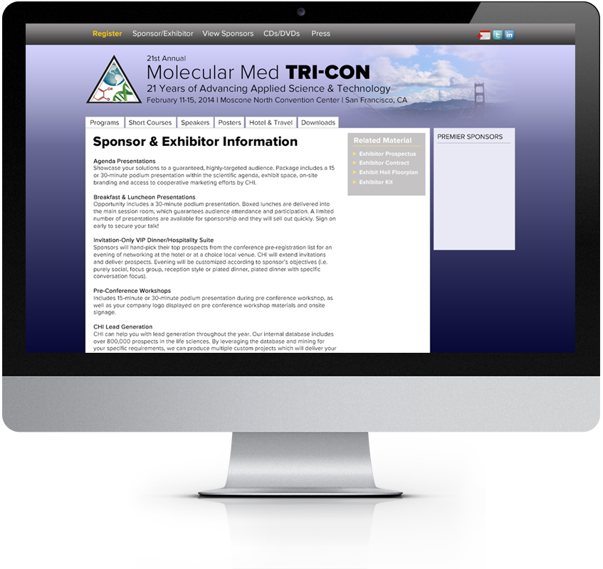

<!--Work Preview section-->
<section class="offset section">
			
	<!--Inner content-->
	<div class="innerContent">

		<!--Container-->
		<div class="container clearfix">
			<div class="sixteen columns">
				<div class="work-preview-close"></div>
			</div>
		</div>
		<!--Container-->

		
		<!--Container-->
		<div class="container clearfix">

			<div class="nine columns">

				<!--image-->
				<div class="work-preview-slider clearfix flexslider" >
					
					<div class="image">

						

					</div>
					
				</div>
				<!--image-->

			</div>


			<div class="seven columns info">
				<h1 class="title">UI Design<br><span>UX Research, Layout and Graphic Manipulation</span></h1>
				<p>This is a secondary concept layout for the Molecular Medicine Tri-Conference. The purpose of this design is to show various options while still creating cohesive product templates. This design shows a interior product page layout.</p>

				<!-- <div class="social-icons">
					<ul>
						<li><i class="step fi-heart"></i><span>100</span></li>
						<li><i class="step fi-social-facebook"></i><span>620</span></li>
						<li><i class="step fi-social-twitter"></i><span>450</span></li>
						<li><i class="step fi-social-pinterest"></i><span>100</span></li>
					</ul>
				</div>
 -->
			</div>


		</div>
		<!--Container-->
	
	</div>
	<!--Inner content-->


			
</section>
<!--Work Preview section-->